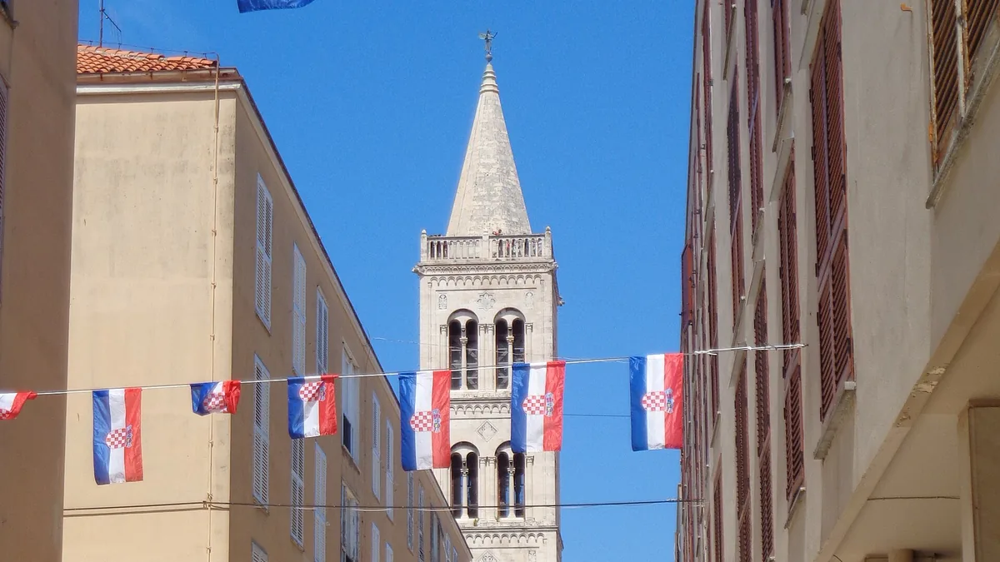

Pronađite nas
Na poluotoku, korak od katedrale
Konoba Teatro je na adresi Ul. Jurja Bijankinija 7, u pješačkoj zoni zadarskog poluotoka, dijela grada koji Zadrani zovu stari grad. Ulica je zatvorena za promet, pa se do konobe dolazi pješice.
Katedrala sv. Stošije udaljena je oko 120 metara, crkva sv. Donata i rimski Forum oko 150 metara, a Lančana vrata stotinjak metara. Iz smjera rive i trajektnog pristaništa do konobe se dolazi za nekoliko minuta hoda kroz stari grad.
Otvoreni smo svaki dan od 09:00 do 00:00. Za stol nazovite +385 95 779 5142.
Ul. Jurja Bijankinija 7, 23000 Zadar